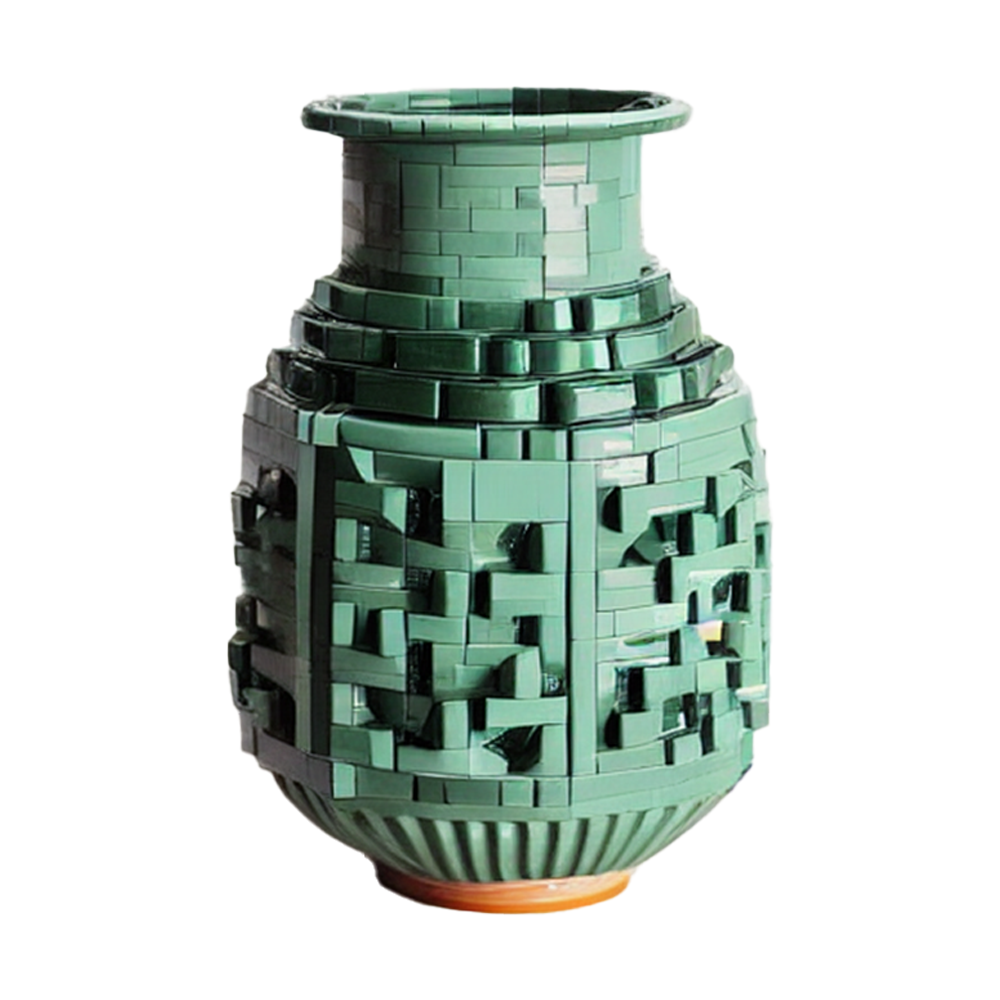
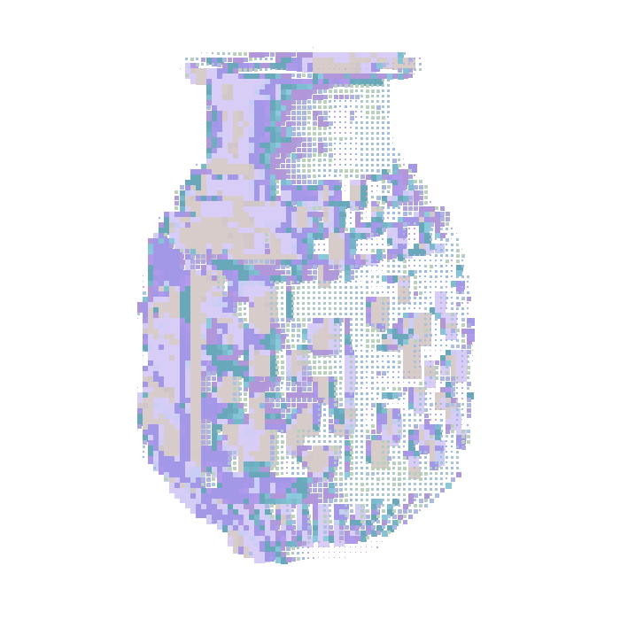

Blockware reinterprets traditional Korean ceramics as modular digital blocks, exploring how digital media transforms cultural objects through abstraction and motion.
Concept / Generative Visual Design / Creative Coding / Motion Editing
Generative Visual / Pixelated Tiles / Animated GIF / Digital Image
Processing / Generative AI / Premiere Pro
This project visualizes the intersection of tradition and technology by reconstructing a Korean ceramic vessel through digital blocks. The familiar form of pottery is transformed into pixel-like tiles, blurring the line between realism and abstraction, heritage and reinterpretation.


Generative AI was used to create the base ceramic imagery. A custom script in Processing then transformed the images into modular pixelated tiles that scatter, disperse, and reassemble through motion.
The final work deconstructs and reimagines cultural heritage through a digital material language, combining ceramic form, modular systems, and visual distortion.